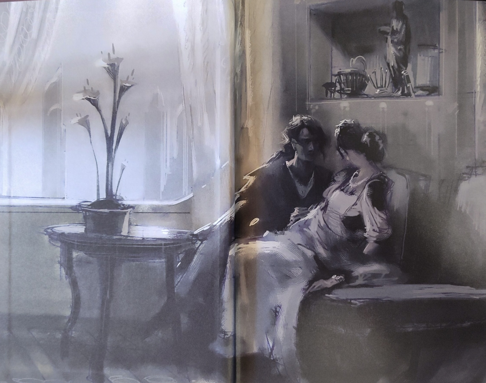
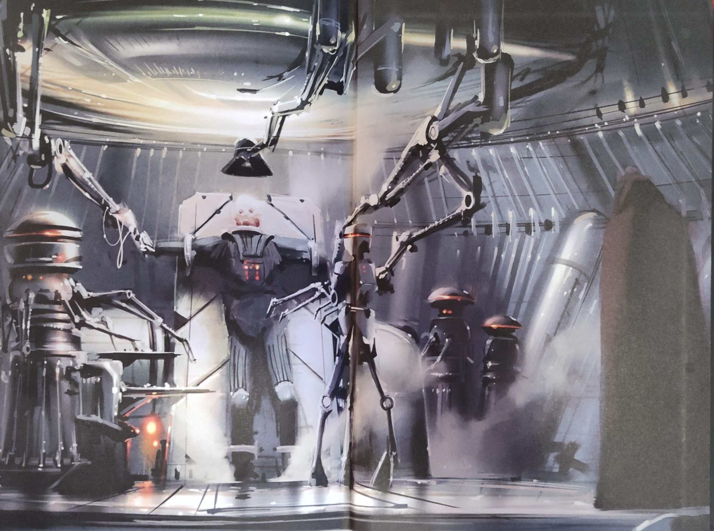

Anakin Skywalker and his fear of loss

I loved Revenge of the Sith as a film long before I read Matthew Stover's novelization. But the book does something the film cannot: it puts you inside Anakin's head. You don't just watch him fall. You understand the logic that makes falling feel like the only option.
Stover says it clearly on the first page:
It is a story of love and loss, brotherhood and betrayal, courage and sacrifice and the death of dreams. It is a story of the blurred line between our best and our worst.
That phrase — the blurred line between our best and our worst — is the whole novel in one sentence. Anakin does not fall because he is secretly evil. He falls because his best qualities, driven by fear, destroy everything around him.
The Dragon That Never Sleeps
The HoloNet calls him the Hero With No Fear. Stover quickly takes that apart.
Fear lives inside him anyway, chewing away the firewalls around his heart.
Anakin is not fearless. He has just built walls to keep the fear locked away. The real enemy is not Dooku or Grievous. It is a cold voice inside him that whispers all things die.
Obi-Wan offers him the Jedi answer:
Everything dies. In time, even stars burn out. This is why Jedi form no attachments: all things pass. To hold on to something, or someone, beyond its time is to set your selfish desires against the Force. That is a path of misery, Anakin; the Jedi do not walk it.
The Jedi are not wrong. But they are saying this to a man who watched his mother die in the sand. What Anakin hears is not wisdom. He hears: stop feeling. That misunderstanding will cost the galaxy everything.
Fear as the Root of Darkness
Most villain stories are about ambition or cruelty. Stover makes a different argument: Anakin's darkness comes from love. The dark side does not promise power. It promises that you can stop death.
The voice in Anakin's heart does not whisper about ruling the galaxy. It reminds him of his mother's last breath, of Obi-Wan's mortality, of Padme, who will someday be taken from him. Unless someone finds a way to stop it.
This is the real temptation. The dark side offers a fantasy: that with enough power, you can force the universe to obey your grief.
Yoda sees exactly what is happening. When Anakin comes to him, terrified by visions of Padme dying, Yoda says:
The fear of loss is a path to the dark side, young one. What you fear to lose, train yourself to release. Let go of fear, and loss cannot harm you.
Yoda is right. And Yoda is completely unhelpful. There is a difference between a true idea and an idea that can actually reach someone in pain. The Jedi have the first but almost never the second. That gap is where Palpatine lives.
What Palpatine Really Offers
Palpatine does not tempt Anakin with power. He tempts him with permission.
In the opera scene, Palpatine does not say the dark side is good. He says the Jedi have been lying to Anakin about who he is. He turns every Jedi warning into a form of control dressed up as wisdom.
Do the one thing that the Jedi fear most: make up your own mind. Follow your own conscience. Do what you think is right.
He also knows exactly where to press:
Have they asked you to break the Jedi Code? To violate the Constitution? To betray a friendship? To betray your own values?
By then, the answer to all four is yes. Palpatine does not need a stronger argument. He only has to point out the Jedi’s failures and wait.
Loyal to People, Not Rules
One of the saddest lines in the book is not from a battle. It is spoken quietly to Obi-Wan:
If he asked me to spy on you, do you think I would do it?
This reveals everything about how Anakin thinks. He is not loyal to institutions or rules. He is loyal to people, specific people who have earned his trust through shared experience. That makes him capable of great love and great violence, often at the same time.
The Jedi Council never understood this. They asked him to spy on Palpatine - the man Anakin trusted most - without thinking about what that would do to someone like him. By the time they realized their mistake, Palpatine had already offered Anakin something better: a world where his loyalty was a strength, not a weakness.
The True Horror of the Ending

The surgery scene is painful to read. Stover writes Vader's physical rebuilding with cold, brutal detail. But the real horror is not the body. It is the thought.
For the final pages, Stover switches to second person — "you." It pulls you in, and then it closes like a trap when Palpatine tells Vader that Padme is dead:
And there is one blazing moment in which you finally understand that there was no dragon. That there was no Vader. That there was only you. Only Anakin Skywalker.
The book refuses the idea that Vader is a separate person who replaced Anakin. There was no possession. There was only a man making choices, each one feeling necessary, until he had nothing left.
Because now your self is all you will ever have.
That is the real punishment: total isolation. Anakin reached for power so that loss could never touch him again. He ended as a man who cannot breathe on his own, sealed in armor, with everyone he loved either dead or gone forever.
Why This Version Hits Differently
The film gives you lava and music and spectacle. The novel gives you something harder: moral logic. Every step in Anakin's fall makes sense in a way the movies never quite managed because the novel shows his inner logic and not just his actions. His worst choices grow directly from his best qualities when those qualities are ruled by fear instead of wisdom.
The Revenge of the Sith novelization is one of the sharpest tragedies in the Star Wars universe because it understands that evil rarely looks like evil. It comes wearing the face of devotion, speaking like someone who finally sees you clearly and tells you that you deserve more than you have been given.
Stover also understands something the saga rarely says out loud: the Jedi are right about attachment, but they are terrible at talking to people in pain. An institution can hold a true idea and still fail completely to pass it on to the people who need it most. That is not a flaw in Jedi philosophy. It is a flaw in Jedi compassion. And it costs them everything.
A Small Personal Note
I read this book in English, which is not my native language. Stover's writing is rich and dense, and I looked up a lot of words on my Kindle. At some point I wanted to turn those lookups into Anki flashcards for spaced repetition. Kindle's built-in vocab tool doesn't support that, and the GitHub tools I tried didn't quite work, so I built kindle-to-anki.
It reads your Kindle's vocab.db, translates your looked-up words with AI-generated context and notes, and exports a clean .apkg deck. The free tier from Gemini is enough to run it. This book is honestly a big part of why it exists. If you try it, I would love to hear your feedback.